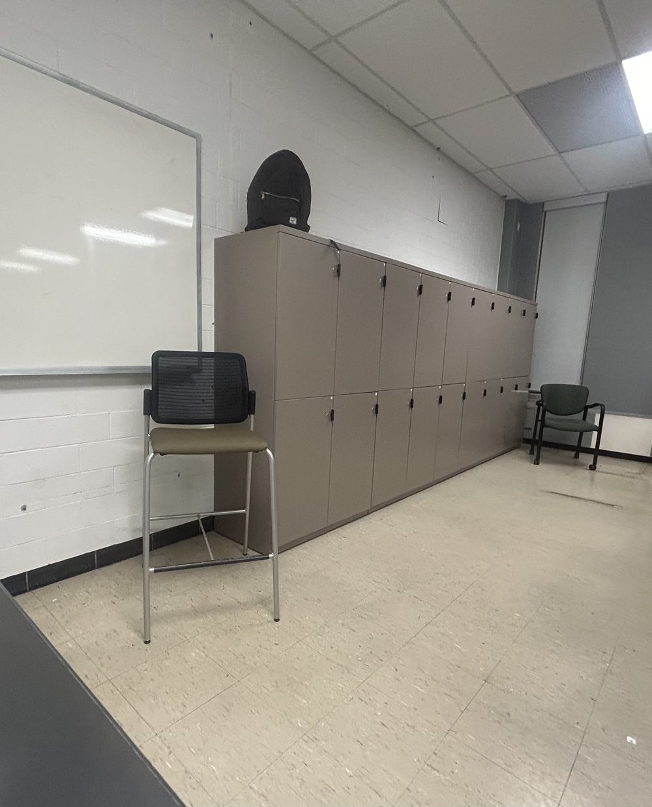
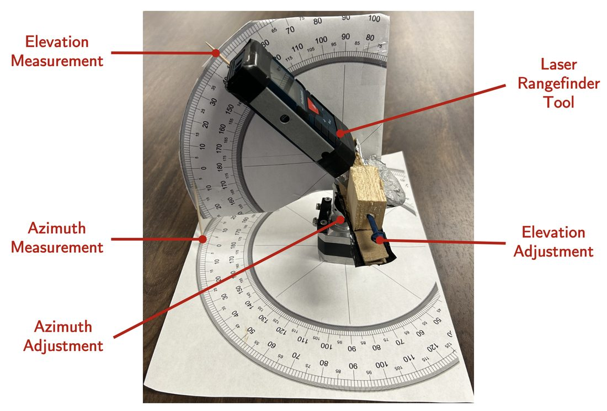
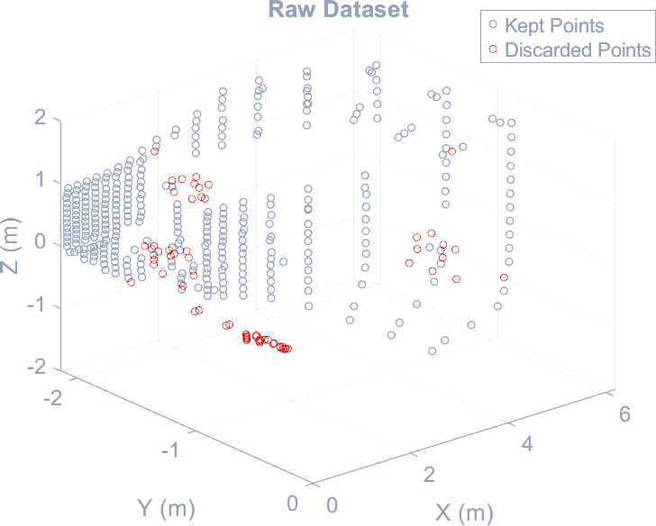
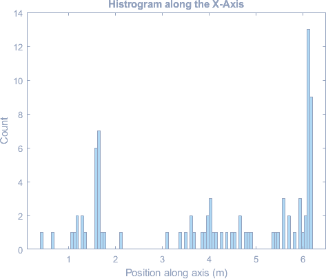
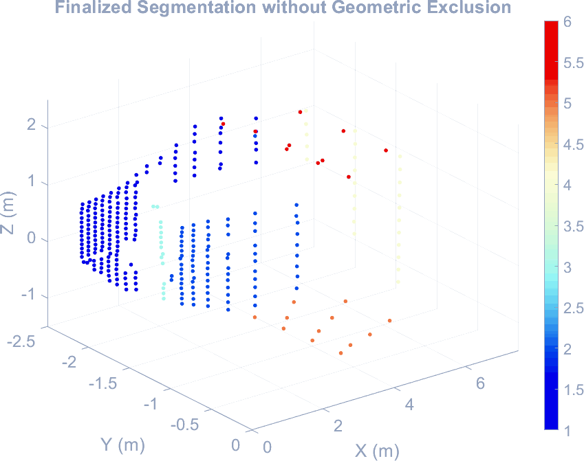
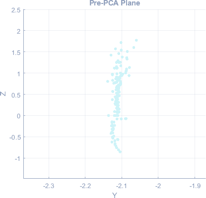
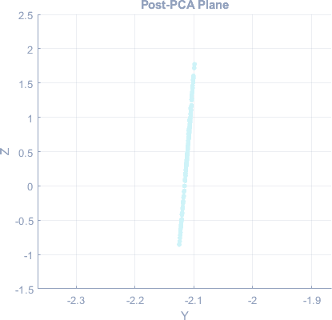
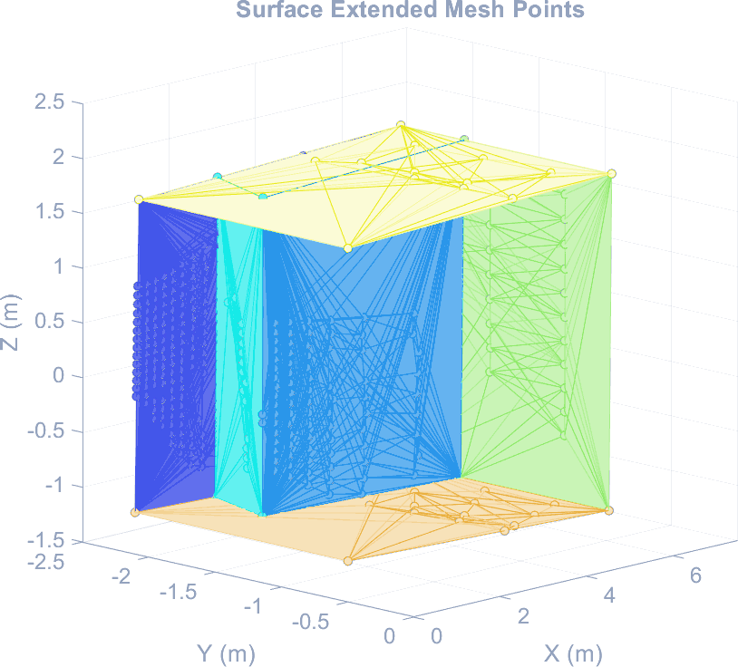
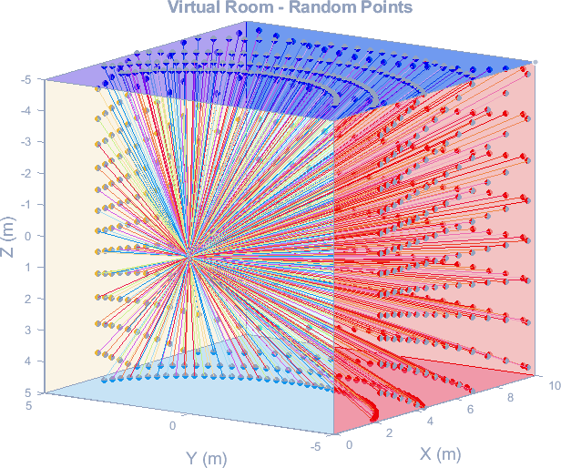
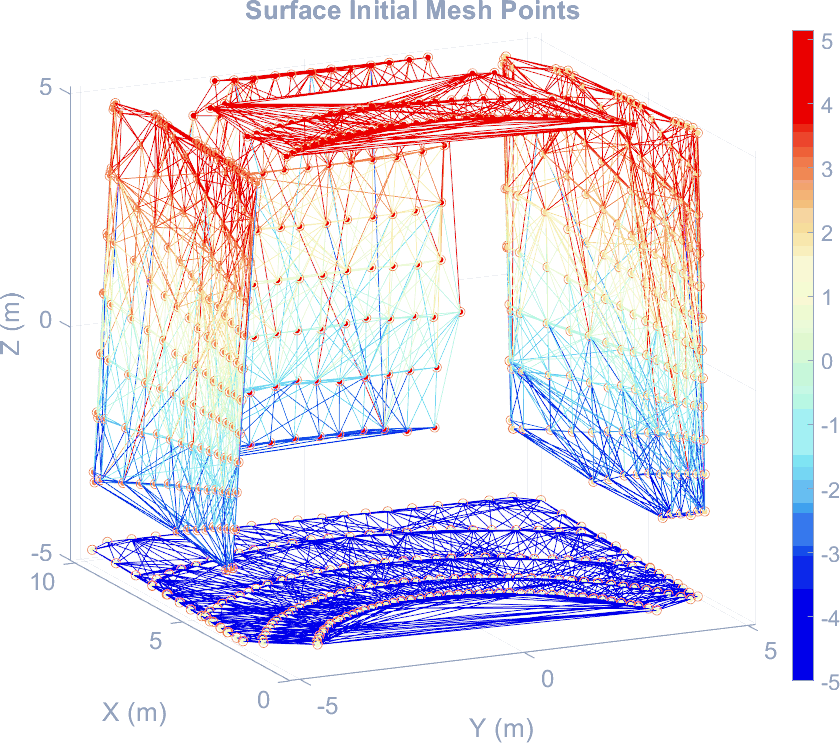

The problem
A point cloud is an unordered list of coordinates. Nothing in it says which points share a surface, where one wall ends, or where the corners are.
Most LiDAR work sidesteps that by knowing where the instrument is. Position and attitude are tracked, every return is transformed into a global frame, and the scene assembles itself. Here nothing outside the instrument is known. The rangefinder sits at the origin of its own coordinate system and never moves, and the room has to be recovered from the returns alone — which is the situation a spacecraft is in during rendezvous or obstacle avoidance, when there is no survey of the thing it is approaching.
The scene was a lab: floor, ceiling, whiteboard, a run of lockers, and two walls meeting at a corner, with a couple of chairs and a backpack added to see whether anything smaller than a wall could be picked out.

Built with a project team of four. The reconstruction algorithm and the synthetic validation described on this page are mine.
The rig
A rangefinder gives range and nothing else. Turning that into a point needs the direction it was pointing, which means a mount that can be aimed and read.
The tool is a Bosch Blaze Pro GLM165-40, 186 g, and it measures from its own back edge. Both axes of rotation were lined up with that edge, so rotating the instrument does not translate the measurement origin and no offsets have to be carried through the maths. An aluminium counterweight balances the moment that alignment creates. Azimuth and elevation are read off two large printed protractors.

Elevation was set first and held by the screw, then seventeen azimuth readings were taken across it, from −80° to 0° in 5° steps. Elevation then advanced by 2°, from −18° up to 24°. That grid produced 398 points, plus 24 extra aimed at the chairs and the backpack and five more measured directly with a tape for validation. Angles were read by eye, so the angular error in the dataset is human rather than instrumental.
From angles to points
Each reading is a range and two angles, so the cloud starts in spherical coordinates and has to be converted:
One correction goes in before anything else. The instrument was not set up square to the room, so the walls come out running diagonally across the coordinate axes. An 8° bias added to every azimuth reading turns the cloud to sit square with the room. That is worth doing for its own sake, and it is also what makes the binning stage in section 04 possible at all — that stage assumes surfaces line up with the axes.

The scan steps by a fixed angle, so the spacing between points on a surface grows with distance from the instrument. The near wall is densely covered and the far end of the room is not. That single fact drives most of what the next section has to deal with.
Finding the planes
Three stages, in order, each one picking up what the previous one could not handle.
RANSAC
Take three points at random, and they define a plane:
Measure every other point's perpendicular distance to it, count how many fall inside a threshold, and keep the plane with the most:
The winning plane's inliers are labelled and removed, and the search runs again on what is left. The inlier threshold is not a fixed number: it is one percent of the mean range in the dataset, so it scales with the scan rather than needing a hand-tuned value per scene. A hundred thousand candidate planes per pass, twenty-five points minimum to count as a surface.
Run RANSAC to exhaustion on this dataset and the later planes stop being walls. With the far end of the room sampled sparsely, the densest remaining arrangement of points is often the scan pattern itself — a fan of returns at one elevation, which is coplanar with the beam and fits beautifully. The loop is therefore capped at 50% of the points. A second pass then re-runs on the labelled half alone, with a ten-point minimum, to split any surface the first pass merged.
Cartesian binning
That leaves half the cloud unlabelled, and those points are not noise — they are the sparse far end of real surfaces. They get correlated geometrically instead. Each axis is histogrammed into a hundred bins; a surface perpendicular to that axis shows up as a spike, because all its points share one coordinate.

Picking the spikes out needs care, because a noisy histogram has dozens of local maxima. The routine finds all of them, then subtracts one count from every bin and looks again, repeating until only the two strongest peaks survive. Shallow maxima drown first. A peak also has to hold at least five points to count at all, which stops the method inventing a surface out of scatter. Points within three bin widths of a surviving peak join that plane.
Geometric exclusion
Binning is generous: a point can sit at the right coordinate along one axis and be nowhere near the surface. So each labelled group is checked for stragglers. For every point, the distance to its nearest neighbour within the same group:
A point whose nearest neighbour is further away than the group's mean plus 0.2 m is not part of that surface, and is dropped. The threshold is generous on purpose: the far end of every plane is genuinely sparse, and a tighter cut would delete the room's real geometry along with the strays.

Flattening
Each group is now known to belong to one surface, but the points do not lie on a plane. Read an angle a fraction of a degree wrong and the point lands off the wall; do that four hundred times and the wall comes out corrugated.
The fix is a singular value decomposition. Mean-centre the group, decompose it, and the three singular values measure how much the point set extends along each of its own principal directions. For something that is meant to be flat, the third is the thickness. Set it to zero, rebuild, and add the mean back:


The fitted wall is slightly tilted, and that tilt is left in. Squaring it up would mean assuming the room has right angles, and the point of the exercise is to see what the point cloud alone can say.
Closing the room
Six flat surfaces still are not a room. Nobody aimed the laser exactly into a corner, so every plane stops short of its own edges and the model has holes where the walls should meet. The edges have to be computed rather than measured.
Two planes that are not parallel meet along a line, whose direction is the cross product of their normals:
That line runs to infinity, so it gets cut where two further planes cross it. Given a bounding plane with normal np through a point Pp, and the line through Pl:
Each corner is added back into both intersecting planes as an artificial point, and the surfaces are re-meshed. The walls now reach their edges and the room closes.

The cabinet faces are extended up to the ceiling, and the real cabinet stops well short of it. There were no returns from the top of the cabinet — the instrument was below it and could not see the surface — so the extension had no nearer plane to stop against. A second vantage point would close that gap; a bounding box would hide it.
A room I made up
Judging a reconstruction against a real room is hard, because the truth is a tape measure and a handful of points. A simulated room has no such limit: every dimension is known exactly.
So the second half of the work is a virtual room — five planes as patch objects, dimensions set by variables, instrument placed at the origin. A simulated scan casts a ray for a given azimuth and elevation, converts it to a unit direction, and tests it against each plane in turn. A ray parallel to a plane gives no intersection:
The hit point converts back to a range, azimuth and elevation, which is exactly the form the real instrument produces. Gaussian error is then added on top so the synthetic scan resembles a measured one:
| Measure | Injected error |
|---|---|
| Range | 0.001 m |
| Azimuth | 0.1° |
| Elevation | 0.1° |

Feeding that through the pipeline produced the most useful result of the project. RANSAC alone segmented the synthetic room completely: the binning and geometric exclusion stages were never invoked, because with perfectly regular scan spacing there is nothing left over for them to do. Those two stages exist because of how the real scan was collected, not because the geometry demands them.

It also exposed something the real data had been hiding. The reconstructed synthetic walls lean inward — by up to 2°, which is 5 cm of error at the floor and ceiling and as much as 30 cm at mid-wall. Rerun the simulation with the error injection switched off and the lean disappears entirely, which points at the error rather than the algorithm. The same effect is present in the measured reconstruction at 0.56°, small enough that it would have been written off as noise if the simulated room had not shown it clearly first.
How close it got
Five points in the scene were measured directly with a tape from the instrument's back edge. Those are treated as truth, and both the rangefinder's own reading and the reconstructed surface are compared against them.
| Point | Tape | Rangefinder | Reconstruction |
|---|---|---|---|
| Whiteboard | 2.108 m | 2.107 m | 2.110 m |
| Back wall | 6.160 m | 6.159 m | 6.130 m |
| Cabinet | 2.718 m | 2.723 m | — |
| Sink | 0.584 m | 0.598 m | — |
| Ceiling | 2.159 m | 2.233 m | — |
The rangefinder tracks the tape to 0.019 m on average, or 1.21% in relative terms — and most of that is the ceiling reading, taken at a steep angle where the beam strikes the surface obliquely. The two points that can be compared against the reconstruction agree to 0.016 m, or 0.28%, across a scene roughly 6.10 m deep.
Six surfaces were recovered from the room: floor, ceiling, back wall, side wall, and both faces of the cabinet run. The chairs and the backpack were not. A chair leg subtends almost nothing at six metres, and the scan's angular step never lands enough returns on one to constitute a surface — picking out objects at that scale needs a denser scan or a different instrument, not a different algorithm.